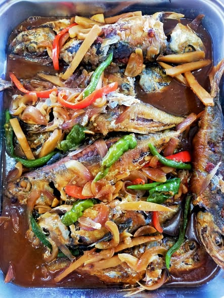
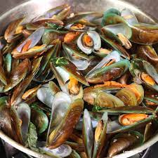

Menu Highlights

Saang
Boiled seashell served with spicy vinegar dipping sauce.

Lambay
Fresh crab served with rice and vinegar-soy calamansi dip.

Eskabetse
Sweet and sour fish dish served warm with vegetables.
Bakasi
Signature eel stew slow-cooked in traditional Cebuano style.

Tahong
Steamed mussels seasoned with ginger and lemongrass.

Grilled Squid
Perfectly grilled squid brushed with savory sauce.